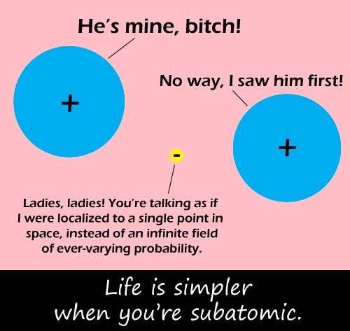

Comic JK 243
When I Feel Like It
⇤
<
?
>
⇥
 10^-12 m, just buy her flowers and hope for the best." alt="Simple Subatomic" />
⇤
<
?
>
⇥
Forum
.
RSS
.
Digg
.
Facebook
.
Reddit
.
Twitter
.
Stumbleupon
...and upon this realization, both nuclei look at the electron in disgust, realizing it is a subatomicmammaluigi, and look for attraction elsewhere. (Or, one turns out to be an anti-proton, and they start their own website, "Two Protons, One Vaseline State.") >They're clearly both protons, they have positive signs! Unless they're gay? >subatomic spaghetti ftw >>They could be nuclei of heavier atoms. In fact, there's no rule that says one of them can't be radioactive, decay producing a positron and a neutrino, and thus kill the poor electron. Subatomic relations can get violent too. >taking size into account they are fighting over a damn nintendo character. Burnt by the spaghetti. >Electrons have no dimensions at all--as far as experiments can tell, they are pure points of mass and cum. >>what bugs me is that they still meatspin... >Chemistry is confounding. >>You mean statistical quantum electrodynamics... >>>Which chemistry incorporates. However, if you're trying to find the least broad discipline incorporating this concept.... good luck. So if the electron has mass but no size, is it really a black hole? Black holes at a quantum level? This is a job for GUT! ...Wait..how can a *guy* be a [slut]. Transvestite Perhaps a love triangle of non-polar covalence? Vvd c h y Seriously, what the hell is this shit?